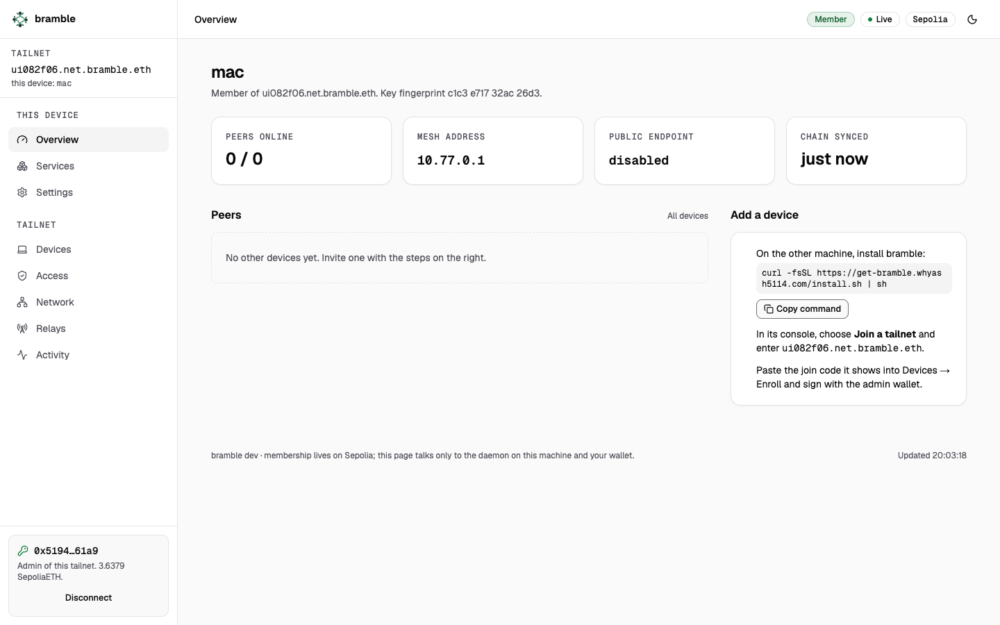
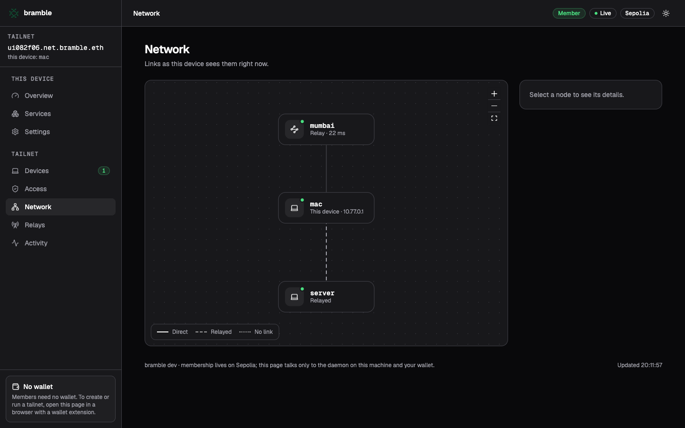
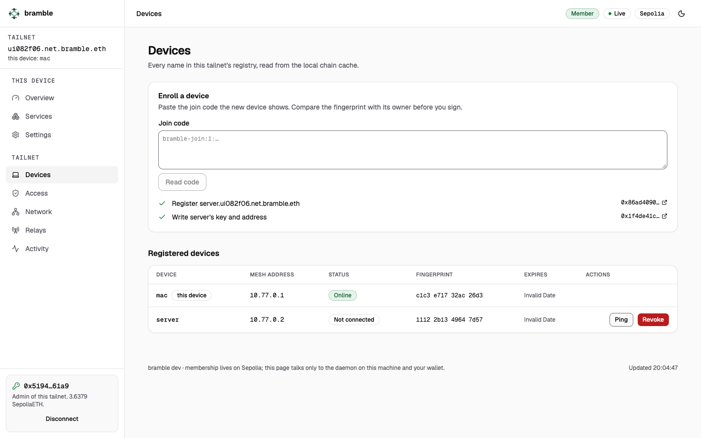

Create
Pick a name. Your wallet claims name.net.bramble.eth and deploys a registry and resolver you
administer. Three Sepolia transactions, about half a minute. You pay the test gas; nothing is sponsored.
Open source · Sepolia testnet
bramble is a WireGuard mesh. Who belongs to it lives in an ENS registry your own wallet owns, so there is no account, no control plane and nothing for us to run except a free relay.
curl -fsSL https://get-bramble.whyash5114.com/install.sh | sh
Linux and macOS, amd64 and arm64. The script verifies a SHA-256 checksum, installs one binary to
~/.bramble/bin and opens the console in your browser. Read the script ·
uninstall script

Pick a name. Your wallet claims name.net.bramble.eth and deploys a registry and resolver you
administer. Three Sepolia transactions, about half a minute. You pay the test gas; nothing is sponsored.
Install on the other machine and enter the tailnet name. It shows a join code and a key fingerprint. The admin pastes the code, checks the fingerprint and signs. No wallet needed to join.
Devices find each other through sealed introductions at a relay, punch through NAT when they can and fall back to a relayed path when they cannot. Every device shares a ping service, plus whatever ports you add.
Anyone can run a relay and list it under relay.bramble.eth. Relays see only packets sealed to
the two devices and WireGuard ciphertext. Devices pin each relay's TLS key, prefer the tailnet's chosen
relays and the oldest directory entries, and drop relays that stop answering.
Ours is free, in ap-south-1, with a daily byte budget. When the budget runs out it keeps introducing devices but stops carrying traffic.
bramble relay -public-host <public IP>
Each device keeps an event-sourced copy of its tailnet's registry on disk and follows new blocks from public Sepolia RPCs. Enrolling, revoking and granting access to a private service are wallet transactions; peers pick them up within seconds.
